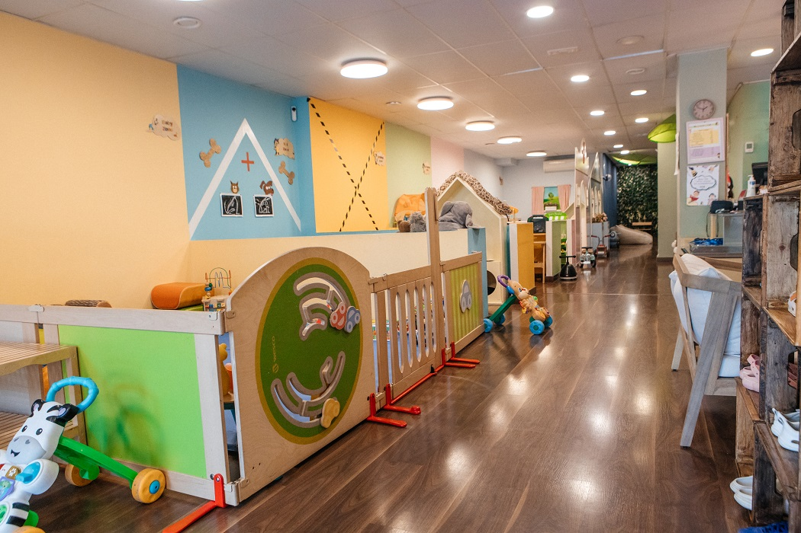
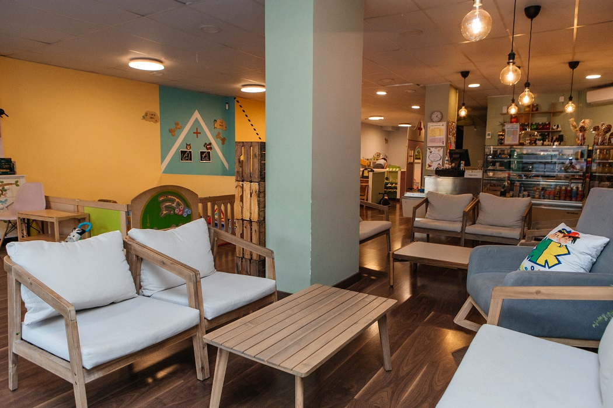
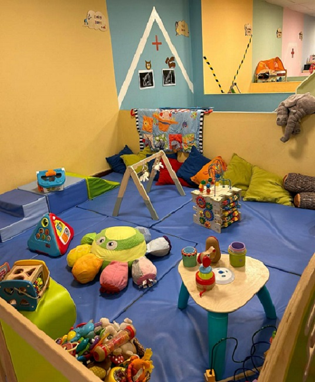
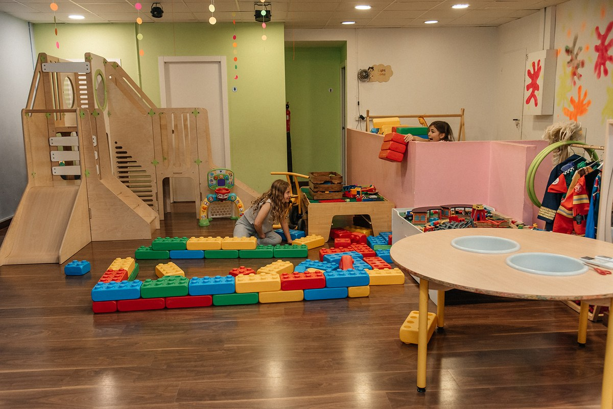

300 m² de juego, baile y psicomotricidad en Les Corts — una cafetería con parque infantil donde los niños juegan mientras tú disfrutas de un buen café. Seguros, limpios y para todas las edades.

Parques interiores diseñados con mimo, donde el juego libre y la experimentación tienen un lugar privilegiado. Tu peque podrá manipular materiales, descubrir texturas, moverse a su ritmo y relacionarse con otros niños de manera natural.

Somos la cafetería con parque infantil que buscabas: los niños pueden jugar, crear y celebrar mientras sus padres los observan y disfrutan de un buen café. Un restaurante con zona infantil y entorno cálido, pensado para que toda la familia se sienta a gusto.
Zonas didácticas donde los niños imitan la vida real a través del juego simbólico.
Un pequeño oasis donde los adultos pueden respirar y los niños siguen disfrutando. Combinamos comodidad y estilo: ambiente acogedor, mobiliario confortable, luz natural y Wi-Fi.
Toma un café o pica algo mientras observas a los niños jugar en un entorno seguro.
Trabaja o estudia con tranquilidad: mesas cómodas y conexión Wi-Fi.
Descansa, lee o conversa en un ambiente relajado.
Mini cumpleaños, talleres familiares o actividades privadas para grupos pequeños.
Alterna ratos de juego libre y descanso dentro del mismo espacio.

¿Necesitas un rato? Deja a tu peque con la tranquilidad de saber que está acompañado por nuestro equipo, rodeado de cariño, juego y estímulos mientras tú resuelves lo tuyo.
Los fines de semana la reserva es obligatoria, porque el espacio puede estar reservado para un cumpleaños y permanecer cerrado al público. De lunes a viernes se puede venir directamente, aunque recomendamos reservar siempre. Puedes reservar desde la app de Kids & Kafé, desde Google o llamando al +34 637 319 226.
La primera hora de juego libre cuesta 10€ por niño y la segunda hora 7€. Los hermanos pagan 8€ la hora. También hay bono de 10 horas de juego por 85€, y bono de 10 horas para familias monoparentales por 75€.
La zona de juego está pensada para niños de 0 a 8 años. Hay una Baby Zone separada para los más pequeños y rincones de juego simbólico para los mayores.
De lunes a viernes abrimos de 9:00 a 20:00. Sábados y domingos de 10:00 a 14:00 y de 16:00 a 20:00. Abrimos los 12 meses del año.
Son 300 m² en total: 200 m² de juego con diez rincones temáticos (Baby Zone, hospital, veterinario, construcción, conducción, sala multisensorial, cocinitas, supermercado, biblioteca y sala de arte) y 100 m² de sala de baile y psicomotricidad con altavoz y luz de discoteca.
En Carrer de Nicaragua 117, barrio de Les Corts, Barcelona (08029). Además de la zona de juego hay un Family Lounge con café de especialidad, menú infantil y Wi-Fi para los adultos.
